| Billignin | ||
|
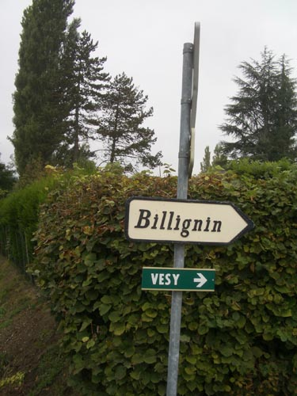 by now you are in the countryside - as you walk up the hill you'll see a few houses and wonder - is this it - is this is Billignin - but it's not - there's at least another 5 or 10 minutes to walk - past open fields - with a good view out over the little valley below 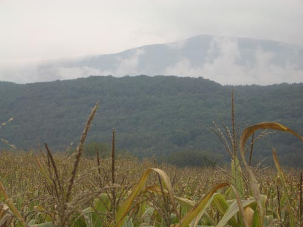 the road descends a little as it enters trees - and then there is the sign - we've arrived - you are at last entering Billignin 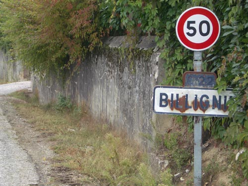 in the distance now you can see the house - you'll note that it's Billignin with two Ls - not as both Gertrude and Alice always spell it in their letters - Bilignin 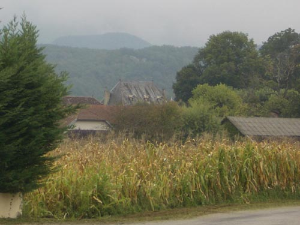 Billignin is not really a village - it's just a small group of farm houses - laid out along the road - some turn their backs - others open their barns to the street - and in the middle of this little knot of habitation is the house where Gertrude Stein and Alice B Toklas spent 14 summers 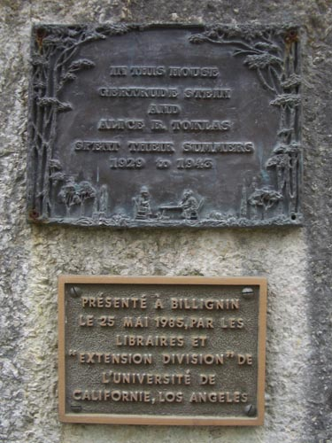 it is of course slightly frustrating to have made it all this way and not be able to get in - the lady from the tourist office had said that the people who own the house are happy to show people round - but unfortunately on the day we visited the house had it shutters closed - and looked very much like no one was there 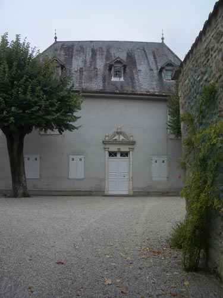 if you balance your camera on the gate across the road from the house 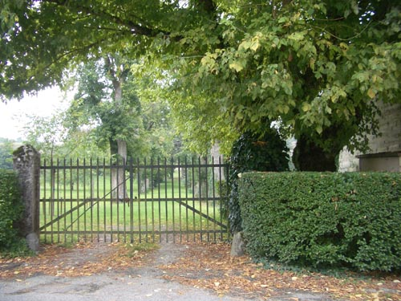 you can pose for your picture - that's me on the left 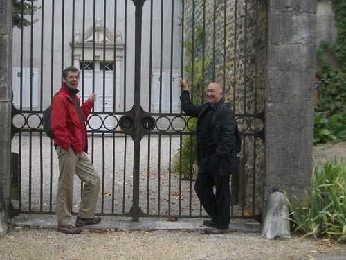 even more than seeing the house - i wanted to walk in the neighbourhood - Gertrude Stein's daily routine always involved afternoon walking - the question in my mind was where did she walk the dog 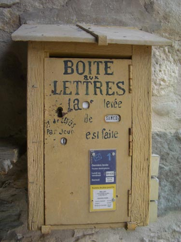 carrying on up the road you pass the post box - eventually reaching the end of Billignin - and discover that you have been walking on Rue Gertrude Stein 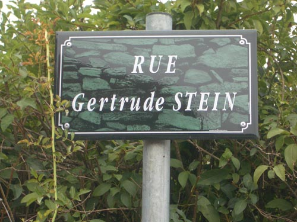 when we were there in september almost all the fields were full of corn - i knew there was reference in the letters to Thornton Wilder to Gerturde and Alice having imported corn seed to plant 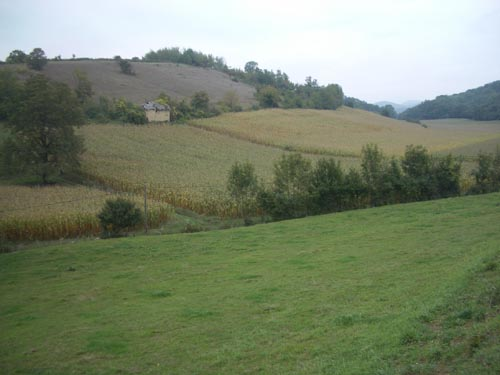 take the road to your left and descend down to another junction - turn again to your left - this road is quite busy - the frequent cars keep you on the grass verge it is interesting to think of these two american ladies in their Ford - and how the world they discovered in it has gone - destroyed by the very same machine 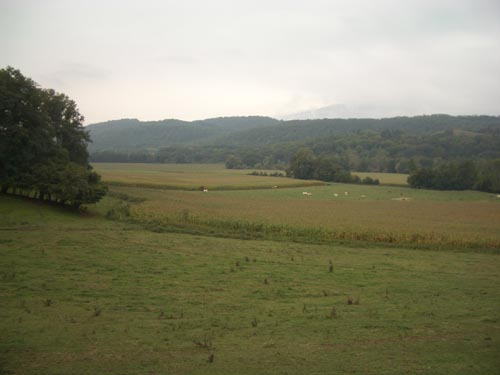 after a while you can turn back - perhaps Gertrude and Basket walked here - perhaps not - just before you get to the turn off to return back up to Billignin keep your eye out for a little opening in the hedge - a little winding country path takes you on a shortcut back to the top of the hill - yes here - you can say - yes here she walked the dog - well maybe 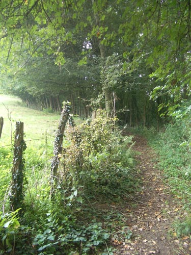 returning back into Billignin we pass the house again and come to the 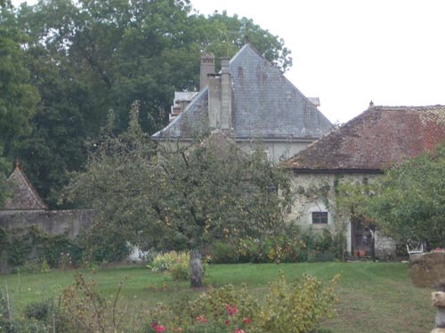 just after passing a large open barn with a resident red squirrel there is a lane that turns off down to the right taking this lane we stroll past the bottom of the house - we can look up at the low garden wall with its little 'lookout' houses 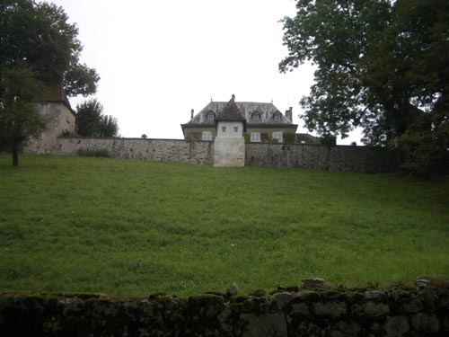 at the bottom of the field is an opening in the stone wall 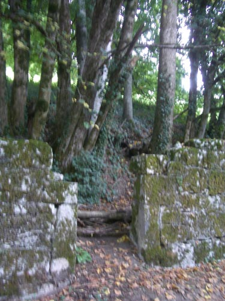 did they - Gertrude and Basket - come throught here - it seemed possible - but i wasn't sure - the hill below the house is steep and muddy - i reckon they would have come the way we had now is the moment to start singing On the Trail of The Lonesome Pine - at the bottom of the hill the path meets another running along the edges of the field at the bottom of the valley - turn to your left and at a leisurly paces enjoy the view - and the idleness of the moment - this is how Gertrude Stein walked the dog 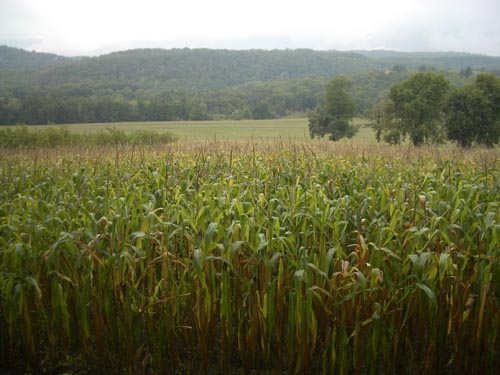 eventually the path will join a road - turn to your left and head back up to the start of the other end of Rue Gertrude Stein - back into Billingin and turn right and return the way you came back into Belley 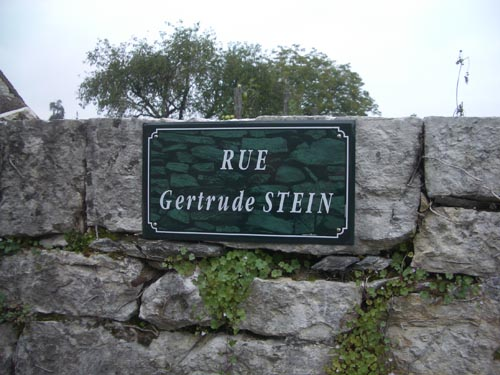 |
||